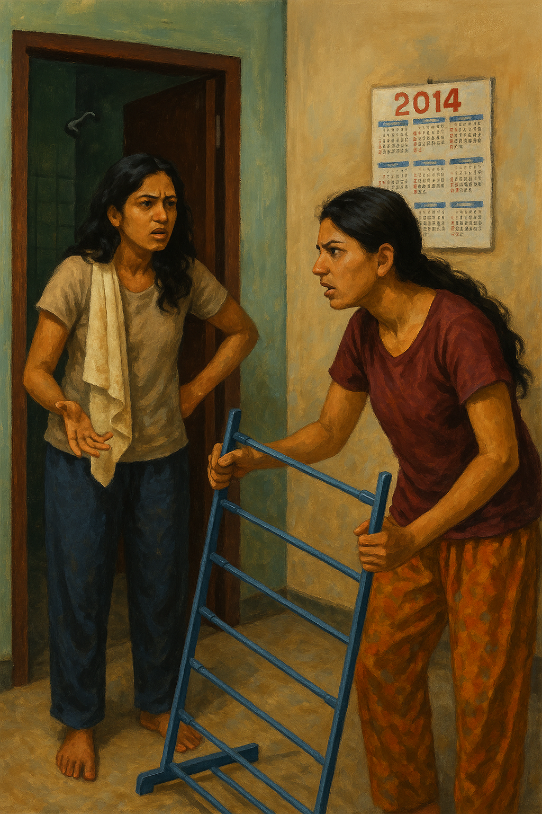

07 PM.. - Earlier That Evening.
Inside flat 3‐C, twenty‐three‐year‐old Shwetha Rao banged on the bathroom door.
"Aditi, ya, hurry up! My stomach will explode!"
From behind the door Aditi Menon laughed. "Two minutes, baba! Need to squeeze out all that vada pav!"
Shwetha rolled her eyes, muttering threats. The second the latch clicked open, she rushed in—only to yelp. "You witch! Couldn't bother to flush?"
"Your fault for yelling 'faster', madaaam," Aditi sang, towels draped over her shoulder.

Five minutes later Shwetha emerged wiping her hands. She froze. "Why are you moving my stuff?" Aditi, already dismantling a shoe rack, answered breezily, "Didn't I tell you? Broker found us another flat‐mate."
"In my room? I can't share one loo with three girls!"
"We are not in the 90s, we are in 2014, Rent's gone up, electricity is killing us. Adjust, madam."
"I guess an internship would save us from this mess, but I am not sure if I can get one.", Shwetha sighed.
A timid knock interrupted them.
Shwetha heads to the door ranting - "Let's see how this goes.."